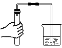
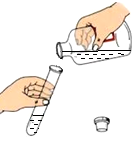
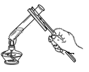

2022年北京市中考化学真题 · 选择题 第11、12、13、14、15题
氧在自然界中广泛存在。回答下列3个小题。
11. 下列符号中，表示两个氧原子的是
A. O2B. 2OC. O2-D. 2O2
12. 下列氧气的性质中，属于化学性质的是
A. 无色无味B. 沸点低C. 能支持燃烧D. 不易溶于水
13. 下列不属于氧气用途的是
A. 气焊B. 食品防腐C. 供给呼吸D. 医疗急救
14. 下列操作不正确的是
A. 检查气密性

B. 倾倒液体
C. 加热液体

D. 取用固体粉末15. 下列物质放入水中能形成溶液 是
是
A. 蔗糖B. 泥土C. 面粉D. 花生油